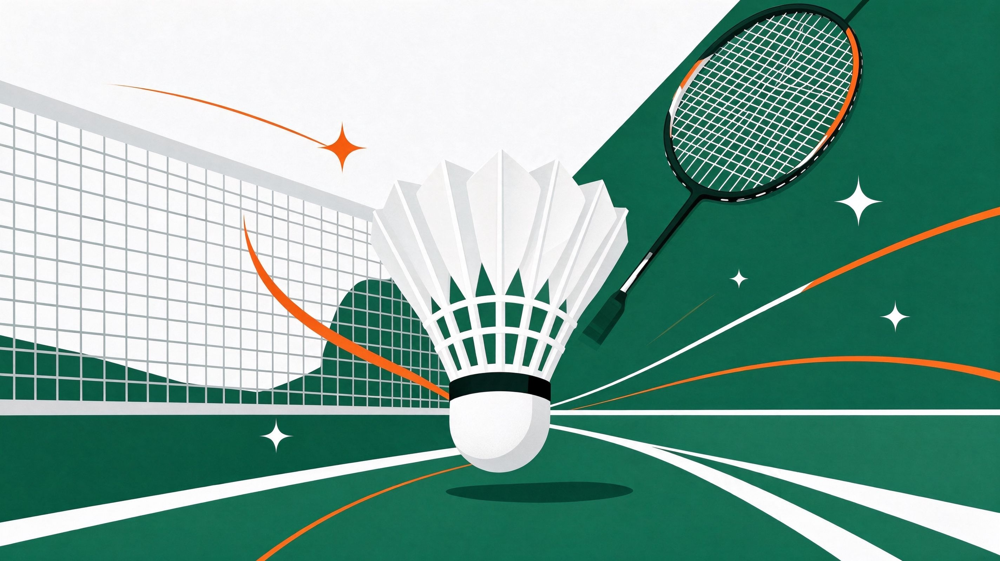

起源
羽毛球是一项流行的球拍运动，名称来自英国的 Badminton House。现代羽毛球运动形成于1873年，源自印度 Poona 的旧式游戏。类似的毽子游戏在古代中国也曾出现。

羽毛球是一项流行的球拍运动，名称来自英国的 Badminton House。现代羽毛球运动形成于1873年，源自印度 Poona 的旧式游戏。类似的毽子游戏在古代中国也曾出现。
羽毛球共有男子单打、女子单打、男子双打、女子双打和混合双打五个主要项目，并于1992年成为奥运会正式比赛项目。
比赛采用三局两胜制。先得21分者胜一局；20平后需领先对手2分；29平时，先得30分者获胜。
羽毛球速度快、球路变化多，既考验反应速度、步法和战术，也适合专业运动员与普通爱好者。运动强度可以灵活调整，是一种优秀的健身运动。